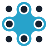

Tibb müəssisələri üçün avadanlıq kataloqu
Klinika, xəstəxana və müəssisə tibb məntəqələri üçün 365 adda avadanlıq. Lazım olanları siyahıya yığın, kommersiya təklifini bir sorğu ilə alın.
- 365 məhsul
- 11 bölmə
- Qiymət kommersiya təklifində
Müəssisənizə görə seçin
Hər seçimdə həmin müəssisə növünə adətən lazım olan avadanlıq bir yerə yığılıb.
Bölmələr üzrə kataloq
Bütün kataloq- Stetoskoplar39
- Diaqnostika alətləriOtoskop və oftalmoskoplar, Dermatoskoplar, Pulsoksimetrlər, Doppler və döl monitorları, Tərəzilər, Digər alətlər40
- İlk yardımİlk yardım çantaları və dəstləri, Defibrillyatorlar, Xərəklər və immobilizasiya, Tənəffüs yolu və reanimasiya, Digər75
- Tibbi cihazlarUltrasəs cihazları (USM), EKQ cihazları, Aspiratorlar, Avtoklavlar, Kolposkoplar, Spirometrlər, Oksigen balonları, İnqalyatorlar, Tibbi soyuducular, Estetik cihazlar56
- Tibbi mebelXərəklər, Çarpayılar, Müayinə masaları, Dərman şkafları, Neqatoskoplar, Ginekoloji masalar, Qanalma masaları, Arabalar, şirmalar və digər42
- ReabilitasiyaReabilitasiya aparatları, Əlil arabaları və yeriş köməkçiləri, İdman aparatları, Digər30
- İşıqlar və lupalarMüayinə və cərrahi işıqlar, Lupalar və baş güzgüləri, Diaqnostik fənərlər26
- ElektrocərrahiyyəKoaqulyatorlar, Elektrodlar, Forsepslər, qayçılar və kabellər29
- Anatomik modellər28
- Tibb çantaları9
- Alkotester və narkotestAlkotesterlər, Narkotester və narkotestlər14
Təklifi necə almaq olar
- Siyahını tərtib edin
Kataloqda lazım olan məhsulun yanındakı «Təklifə» düyməsini basın.
- Sayı və təşkilatı göstərin
Təklif siyahısında hər məhsulun sayını və təşkilatınızın adını yazın.
- Sorğunu göndərin
Siyahını WhatsApp və ya e-poçtla göndərin. Kommersiya təklifini hazırlayıb sizə göndəririk.
Tez-tez verilən suallar
Bakıda çatdırılma necədir?
100 AZN və yuxarı sifarişlərdə Bakı daxilində çatdırılma pulsuzdur, 100 AZN-dən az sifarişlərdə ödənişlidir. Sifariş iş günü ərzində çatdırılır; saat 17:00-dan sonra verilən sifarişlər növbəti iş günü çatdırılır.
Regionlara çatdırılma varmı?
Bəli. Regionlara çatdırılma ödənişlidir; qiyməti və müddəti ünvana görə razılaşdırılır.
Zəmanət verilirmi?
Bəli, məhsullara ən azı 1 il zəmanət verilir. Bəzi məhsullar üçün zəmanət müddəti daha uzundur — məhsul üzrə soruşa bilərsiniz.
Ödənişi necə edə bilərəm?
Nağd, bank köçürməsi və ya hesab-faktura ilə. Şirkət və müəssisələrə hesab-faktura təqdim olunur.
Kommersiya təklifini necə alım?
Lazım olan məhsulları təklif siyahısına əlavə edin və siyahını WhatsApp və ya e-poçtla göndərin. Qiymət, mövcudluq və çatdırılma müddəti göstərilən kommersiya təklifini sizə göndəririk.
İş saatlarınız və ünvanınız?
Bazar ertəsi – şənbə, 09:00–19:00; bazar günü istirahət günüdür. Ünvan: Bakı, Ceyhun Səlimov küç. 16.
Haqqımızda
tibbiavadanliq.az MEDİGROUP MMC-nin avadanlıq kataloqudur. 2017-ci ildən dövlət və özəl tibb müəssisələrini, neft və qeyri-neft sektorunun sənaye müəssisələrini tibbi avadanlıqla təchiz edirik.
- 2017ildən bazardayıq
- 365adda avadanlıq
- 11bölmə
Əlaqə
- Telefon və WhatsApp
- +994 70 272 03 02WhatsApp
- E-poçt
- sales@tibbiavadanliq.az
- Ünvan
- Bakı, Ceyhun Səlimov küç. 16Xəritədə açYol göstər
- İş vaxtı
- Bazar ertəsi – Şənbə, 09:00–19:00